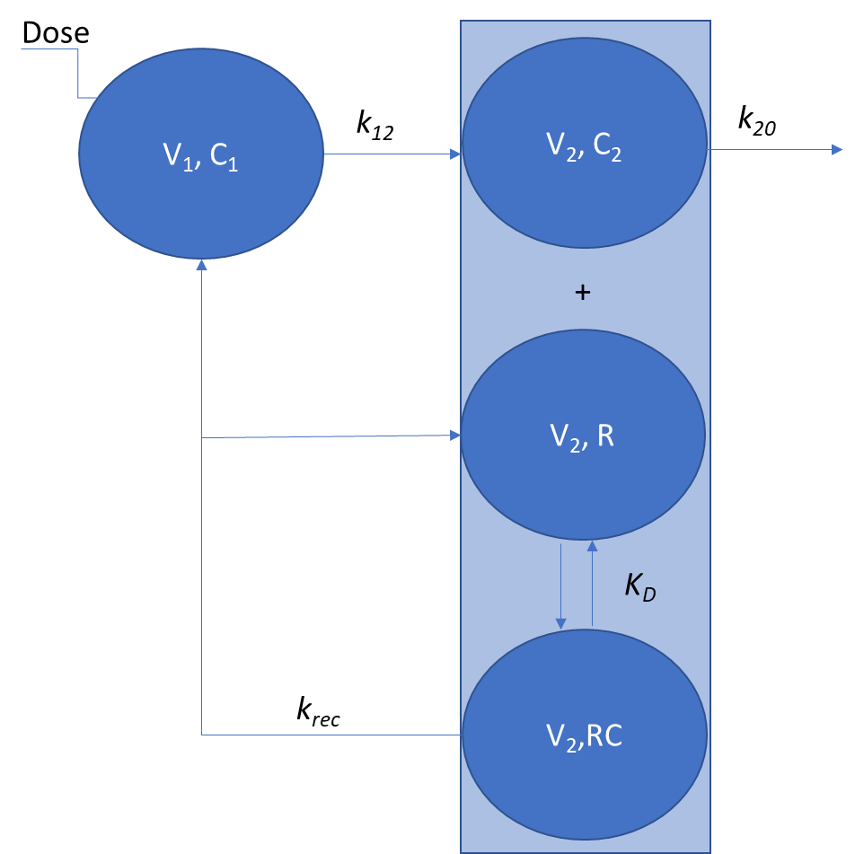
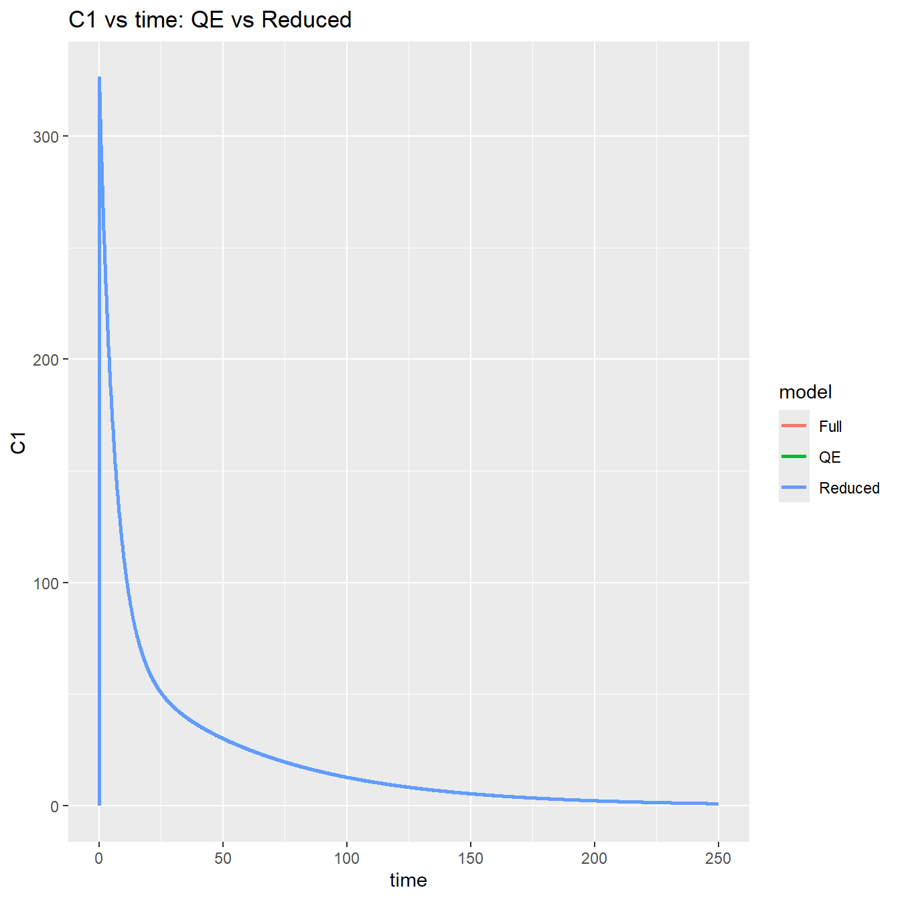
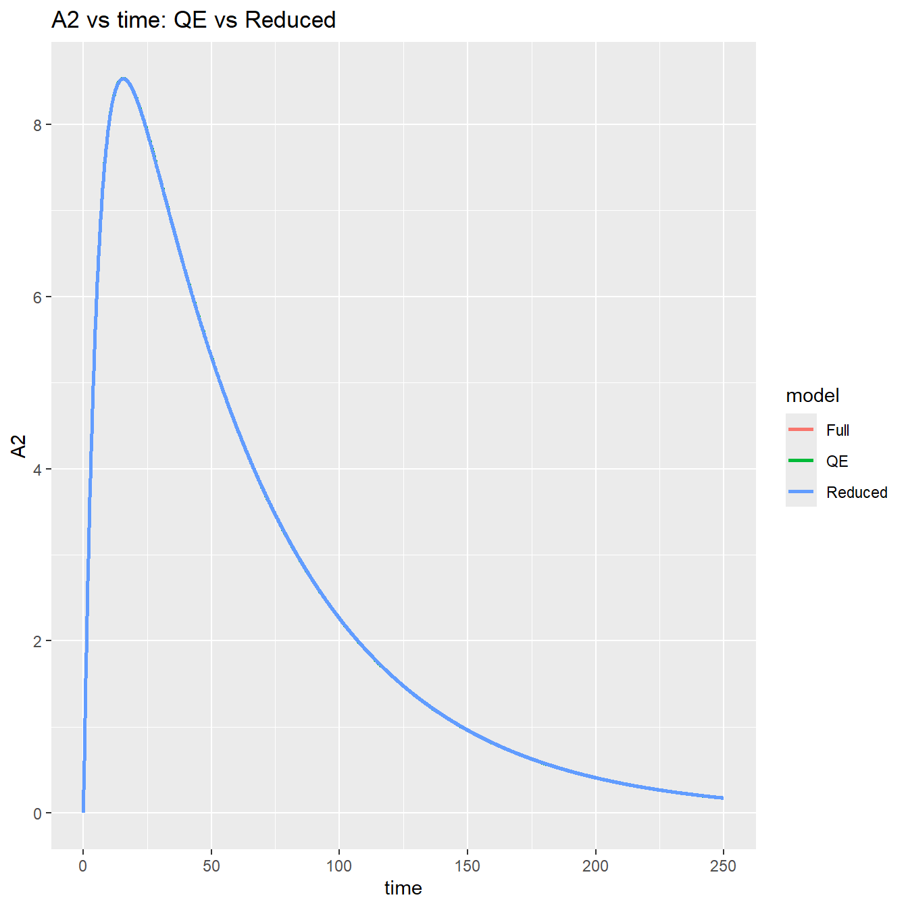

Code
library(mrgsolve)
library(dplyr)
library(ggplot2)
# select<-dplyr::select
# filter<-dplyr::filter
set.seed(10271998) library(mrgsolve)
library(dplyr)
library(ggplot2)
# select<-dplyr::select
# filter<-dplyr::filter
set.seed(10271998) Here we propose a mechanistic model of Motawizumab that includes FcRn recycling. It is a two-compartment pharmacokinetic system with nonlinear receptor-mediated recycling.

\[ \begin{align} \frac{dA_1}{dt} &= -k_{12} \cdot A_1 + k_{rec} \cdot RC \cdot V_{2}, A_1(0)=Dose \\ \frac{dC_2}{dt} &= - k_{on}\cdot C_2 \cdot R + k_{off} \cdot RC + k_{12} \cdot A_1/V_2 - k_{20} \cdot C_2, C_2(0)=0 \\ \frac{dR}{dt} &= - k_{on} \cdot C_2 \cdot R + k_{off} \cdot RC + k_{rec} \cdot RC, R(0)=R_0 \\ \frac{dRC}{dt} &= k_{on} \cdot C_2 \cdot R - k_{off} \cdot RC - k_{rec} \cdot RC, RC(0)=0 \\ \end{align} \]
where:
The concentration in central compartment is \[ C_1 = \frac{A_1}{V_1} \]
code1 <- '
#
$PARAM V1=0.046, K20=0.023, K12=0.13, KREC=0.34, KD=8352, AR0=724, KON=10000
$CMT A1 A2 AR ARC
$MAIN
double KOFF = KON*KD;
AR_0 = AR0;
$ODE
dxdt_A1 = -K12*A1 + KREC*ARC;
dxdt_A2 = -KON*A2*AR + KOFF*ARC + K12*A1 - K20*A2;
dxdt_AR = -KON*A2*AR + KOFF*ARC + KREC*ARC;
dxdt_ARC= KON*A2*AR - KOFF*ARC - KREC*ARC;
$TABLE
double C1=A1/V1;
$capture C1;
'This first approximation assumes quasi steady-state binding equilibrium. In this approximation it is assumed that the following equality holds:
\[ K_D = \frac{R \cdot C_2}{RC} \] By Introducing new variables (total receptor and drug concentrations)
\[ Rtot = RC+R \\ Ctot = RC+C_2 \] one can recognize that the above set of equations can be expressed as:
\[ \begin{align} \frac{dA_1}{dt} &= -k_{12} \cdot A_1 + k_{rec} \cdot RC \cdot V_{2}, A_1(0)=Dose \\ \frac{dC_{tot}}{dt} &= k_{12} \cdot A_1/V_2 - k_{20} \cdot C_2 - k_{rec} \cdot RC, C_2(0)=0 \\ \frac{dR_{tot}}{dt} &= 0, R(0)=R_0 \\ RC &= \frac{R_{tot} \cdot C_2}{K_D+C_2} \end{align} \]
where C2 is given by solving the quadratic equation:
\[ \begin{align} X &= C_{tot} - R_0 - K_D \\ C_2 &= \frac{1}{2} \left( X + \sqrt{X^2 + 4 \cdot K_D \cdot C_{tot}} \right) \end{align} \] Converting to masses leads to:
\[ \begin{align} \frac{dA_1}{dt} &= -k_{12} \cdot A_1 + \frac{k_{rec} \cdot AR_0 \cdot A_2}{K'_D + A_2} \\ \frac{dA_{tot}}{dt} &= k_{12} \cdot A_1 - \frac{k_{rec} \cdot AR_0 \cdot A_2}{K'_D + A_2} - k_{20} \cdot A_2 \\ \end{align} \] where:
\[ \begin{align} X &= A_{tot} - AR_0 - K'_D \\ A_2 &= \frac{1}{2} \cdot \left( X + \sqrt{X^2 + 4 \cdot K'_D \cdot A_{tot}} \right) \\ AR_0 &= R_0 \cdot V_2 \\ A_{tot} &= R_{tot}\cdot V_2 \\ K'_{D} &= K_{D}\cdot V_2 \\ \end{align} \]
code2 <- '
#
$PARAM V1=0.046, K20=0.023, K12=0.13, KREC=0.34, KD=8352, AR0=724
$CMT A1 Atot
$MAIN
$ODE
double XYZ = Atot - AR0 - KD;
double disc = XYZ*XYZ + 4.0*KD*Atot;
double A2 = 0.5*(XYZ + sqrt(disc));
dxdt_A1 = -K12*A1 + KREC*AR0*A2/(KD + A2);
dxdt_Atot = K12*A1 - KREC*AR0*A2/(KD + A2) - K20*A2;
$TABLE
double C1=A1/V1;
$capture C1 A2;
'The above model can be further reduced to a linear two-compartment model. This model is obtained by applying the linear-binding (unsaturated) approximation (\(A_2\)<<\(K'_D\)). Under this condition the saturable term linearizes as
\[ \frac{AR_0 \cdot A_2}{K'_D + A_2}=\frac{AR_0 \cdot A_2}{K'_D} \] The total-drug mass balance also linearizes
\[ A_{tot} = A_2 + AR \approx A_2 + \frac{AR_0}{K'_D} \cdot A_2 = A_2 \cdot \Bigl(1 + \frac{AR_0}{K'_D}\Bigr) \]
which leads to \[ \begin{align} \frac{dA_1}{dt} &= -k_{12} \cdot A_1 + k_{21} \cdot A_{tot} \\ \frac{dA_{tot}}{dt} &= k_{12} \cdot A_1 - (k_{21} + k_{el})\cdot A_{tot} \end{align} \] where:
\[ \begin{align} \alpha &= 1 + \frac{AR_0}{K'_D} \\ k_{\mathrm{rec}} &= \frac{k_{rec} \cdot AR_0}{K'_D} \\ k_{21} &= \frac{k_{rec}}{\alpha} \\ k_{\mathrm{el}} &= \frac{k_{20}}{\alpha} \end{align} \]
\[ \begin{align} C_1 &= \frac{A_1}{V_1} \\ A_2 &= \frac{A_{tot}}{\alpha} \end{align} \]
code3 <- '
#
$PARAM V=0.046, K20=0.023, K12=0.13, KREC=0.34, KD=8352, AR0=724
$CMT A1 Atot
$MAIN
double alpha = 1.0 + AR0 / KD; // scaling factor
double k_rec = KREC * AR0 / KD; // effective recycling rate
double k21 = k_rec / alpha; // return rate to central
double kel = K20 / alpha; // effective elimination from Atot
$ODE
dxdt_A1 = -K12 * A1 + k21 * Atot;
dxdt_Atot = K12 * A1 - (k21 + kel) * Atot;
$TABLE
double C1 = A1 / V;
double A2 = Atot / alpha;
$capture C1 A2;
'Predictions are nicely overlaid proving the approximations are correct. THe last model is equivalent to a 2-compartment model with elimination from peripheral compartment.
mod1 <- mcode("d1", code1)
mod2 <- mcode("d2", code2)
mod3 <- mcode("d3", code3)
out1 <- mod1 %>%
ev(amt = 15) %>%
mrgsim(end = 250, delta = 0.1)%>%
as.data.frame() %>% mutate(model = "Full")%>%
select(c(ID,time, C1,A2,model))
out2 <- mod2 %>%
ev(amt = 15) %>%
mrgsim(end = 250, delta = 0.1)%>%
as.data.frame() %>% mutate(model = "QE")%>%
select(c(ID,time, C1,A2,model))
out3 <- mod3 %>%
ev(amt = 15) %>%
mrgsim(end = 250, delta = 0.1)%>%
as.data.frame() %>% mutate(model = "Reduced")%>%
select(c(ID,time, C1,A2,model))
out <- bind_rows(out1,out2, out3)
p1 <- ggplot(out, aes(time, C1, color = model)) +
geom_line(size = 1) +
ggtitle("C1 vs time: QE vs Reduced")
p2 <- ggplot(out, aes(time, A2, color = model)) +
geom_line(size = 1) +
ggtitle("A2 vs time: QE vs Reduced")
print(p1)
print(p2)
sessionInfo()R version 4.3.1 (2023-06-16 ucrt)
Platform: x86_64-w64-mingw32/x64 (64-bit)
Running under: Windows 11 x64 (build 26200)
Matrix products: default
locale:
[1] LC_COLLATE=Polish_Poland.utf8 LC_CTYPE=Polish_Poland.utf8
[3] LC_MONETARY=Polish_Poland.utf8 LC_NUMERIC=C
[5] LC_TIME=Polish_Poland.utf8
time zone: Europe/Warsaw
tzcode source: internal
attached base packages:
[1] stats graphics grDevices utils datasets methods base
other attached packages:
[1] ggplot2_4.0.2 dplyr_1.1.4 mrgsolve_1.7.2
loaded via a namespace (and not attached):
[1] vctrs_0.6.5 cli_3.6.2 knitr_1.51 rlang_1.1.3
[5] xfun_0.56 generics_0.1.3 S7_0.2.1 jsonlite_2.0.0
[9] labeling_0.4.3 glue_1.7.0 htmltools_0.5.9 scales_1.4.0
[13] fansi_1.0.6 rmarkdown_2.30 grid_4.3.1 evaluate_1.0.5
[17] tibble_3.2.1 fastmap_1.2.0 yaml_2.3.12 lifecycle_1.0.4
[21] compiler_4.3.1 RColorBrewer_1.1-3 Rcpp_1.1.1 pkgconfig_2.0.3
[25] rstudioapi_0.18.0 farver_2.1.2 digest_0.6.39 R6_2.5.1
[29] tidyselect_1.2.1 utf8_1.2.4 pillar_1.9.0 magrittr_2.0.3
[33] withr_3.0.0 tools_4.3.1 gtable_0.3.6